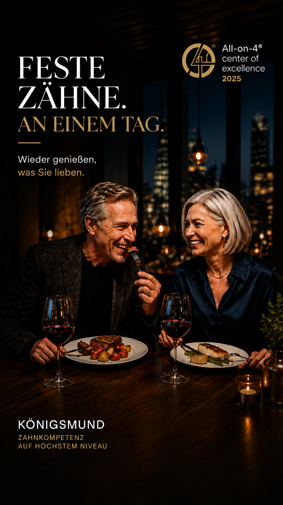
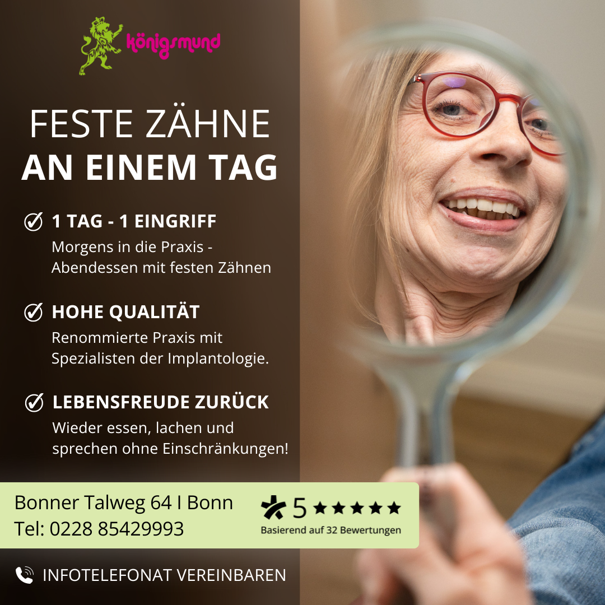

Positionierung, Funnel und klare Angebotskommunikation.
Digital Marketing & Performance
Marketing, das leise arbeitet und sichtbar wächst.
Ich unterstütze Healthcare-Projekte, lokale Unternehmen und persönliche Marken mit Google Ads, Meta Ads, AI Content, Video-Konzepten und klarer Online-Strategie.
Google Ads
Meta Ads
AI Content
Healthcare
Based in Bonn
Performance Marketing · AI Content · Lead Generation
AI-Visuals, Video-Konzepte, Content und Kampagnenmotive.
Ads, Testing, Analytics und Optimierung auf qualifizierte Leads.
+42%
mehr Leads durch Creative-Relaunch
-28%
geringere Lead-Kosten durch Funnel-Optimierung
12+
Content-Formate aus einem Kampagnenkonzept
Leistungen
Online-Marketing für professionelle Sichtbarkeit und moderne Content-Systeme.
Vom ersten Markenversprechen bis zur laufenden Kampagne: Strategie, Kreation und Performance greifen ineinander.
Strategy
Marketing-Strategie
Positionierung, Zielgruppen, Funnel-Struktur und ein realistischer Plan für nachhaltiges Wachstum.
Performance
Google & Meta Ads
Kampagnenaufbau, Optimierung, Budgetsteuerung und klare Auswertung der wichtigsten Kennzahlen.
Content
Content & Social Media
Inhalte, die Expertise sichtbar machen, Vertrauen aufbauen und Menschen zur Anfrage führen.
AI Studio
AI Video, Audio & Creative Production
AI-Visuals, Video-Ideen, Voice- und Song-Konzepte, Reels, Hooks und Kampagnenmotive für moderne Online-Auftritte.
Automation
AI-gestützte Workflows
Schnellere Content-Planung, Varianten-Testing, Prompt-Systeme, Redaktionspläne und Übergabe an Ads, Website und Social Media.
Online Strategy
Digitale Wachstumsarchitektur
Verbindung aus Positionierung, Funnel, Ads, Landingpages, Content und AI-Produktion zu einer klaren, messbaren Online-Strategie.
AI Studio
KI als kreativer Wachstumsmotor, nicht als Spielerei.
Moderne Marken brauchen Tempo, Varianten und Wiedererkennbarkeit. Ich nutze AI-Tools für professionelle Content-Systeme: von Visuals und Video-Konzepten bis zu Kampagnenhooks, Audio-Ideen und datenbasierten Online-Strategien.
AI Video Concepts
Storyboard, Hook, Szenenlogik, Reels und Ads für Social Media Kampagnen.
Generative Visuals
Bildwelten, Key Visuals, Creative-Varianten und visuelle Markenstimmung.
Audio & Song Ideas
Jingles, Sound-Moodboards, Song-Briefings und Audio-Branding Konzepte.
Prompt Systems
Wiederholbare Prompts für Content, Ads, Landingpages und Kampagnenideen.
3x
schnellere Creative-Varianten für Tests
12+
Content-Formate aus einem Kampagnenkonzept
90 Tage
Strategie, Produktion, Testing und Optimierung
Portfolio
Healthcare-Marketing, das Vertrauen sichtbar macht.
Featured case · Dental & Implantology
Königsmund: Premium-Kommunikation für feste Zähne und All-on-4.
Beispielhafte Kampagnenwelt für eine hochwertige Zahnarztpraxis: emotionale Creatives, klare Nutzenbotschaften, lokale Lead-Generierung und Performance-Auswertung.

Campaign creative
Ein besseres Leben ist möglich
Emotionales Patientennutzen-Creative für Meta Ads und Social Media.

Premium positioning
Feste Zähne an einem Tag
High-value Messaging für Implantologie mit Lifestyle-Narrativ.

Brand asset
Perfektion, die man nicht sieht
Elegantes Motiv für Vertrauen, Qualität und Premium-Wahrnehmung.

Conversion creative
1 Tag · 1 Eingriff · klare Vorteile
Direktes Angebots-Creative mit Nutzenpunkten, Social Proof und Kontaktimpuls.
Performance snapshot
Beispielhafte Optimierung über 90 Tage
Die Zahlen zeigen eine realistische Case-Study-Struktur: Creative Tests, Budgetsteuerung, lokale Zielgruppen und klare Conversion-Signale.
Monat 1
Monat 2
Monat 3
Lead quality
Methode
Ein klarer Ablauf statt Marketing-Chaos.
Was bremst aktuell?
Angebot, Website, Ads, Content, Tracking und Zielgruppe werden strukturiert geprüft.
Was muss sichtbar werden?
Messaging, Creatives, AI-Assets, Landingpage-Logik und Kampagnenstruktur entstehen.
Was funktioniert wirklich?
Varianten werden getestet, Budgets geschärft und Entscheidungen aus Daten abgeleitet.
Über mich
Professionell, präzise und nah an den Zahlen.
Ich arbeite an der Schnittstelle von Performance Marketing, Content und digitaler Markenkommunikation. Besonders wichtig ist mir, dass Marketing verständlich bleibt: Ziele, Budget, Maßnahmen und Ergebnisse müssen klar nachvollziehbar sein.
Mein Schwerpunkt liegt auf Healthcare, lokalen Dienstleistungen und Premium-Angeboten, bei denen Vertrauen genauso wichtig ist wie Reichweite.
Expertise
Skills, Tools und Schwerpunkte.
Top Skills
- Pay-Per-Click Marketing
- Search Advertising
- Search Engine Marketing
- Lead Generation
- Social Media Content
Certifications
- Google Ads Search Certification
- Digital Marketing Manager/-in
- KI Kompakt - Grundlagen und Anwendungen
Kontakt
Bereit für einen Auftritt, der professionell verkauft?
Schreiben Sie kurz, worum es geht, welche Ziele Sie haben und welche Kanäle bereits genutzt werden.